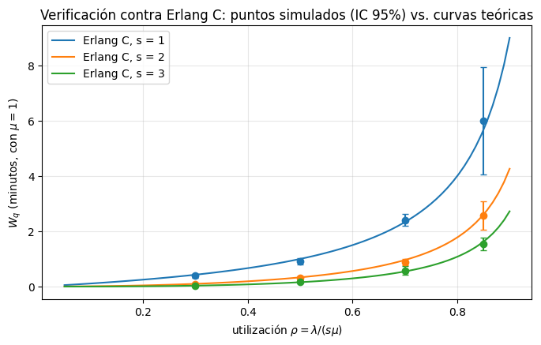
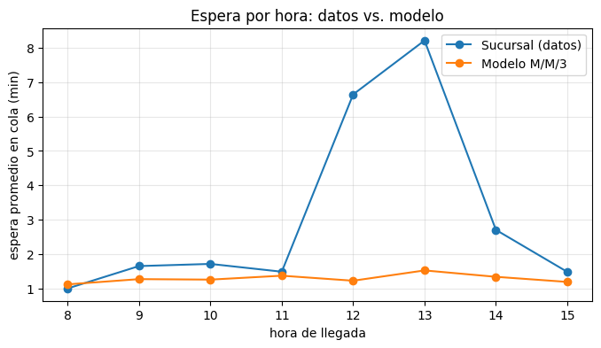
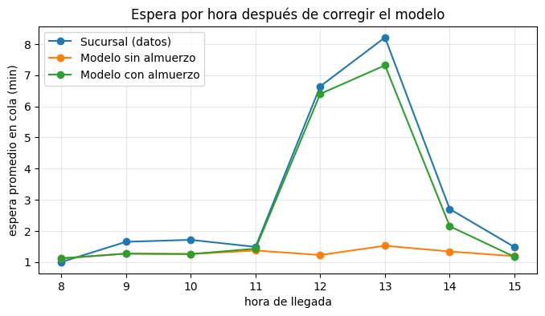

Complementaria Semana 13: Verificación y validación de modelos de simulación#
La semana pasada ajustamos distribuciones a datos reales y comprobamos, con pruebas de bondad de ajuste, que eran compatibles con ellos. Con esas distribuciones ya podemos alimentar un modelo de colas. Pero antes de usar ese modelo para tomar decisiones hay que responder dos preguntas más, que suenan parecidas y no lo son:
¿El código hace lo que quisimos que hiciera? Eso es verificar.
¿Lo que quisimos hacer representa el sistema real? Eso es validar.
Hoy trabajamos las dos sobre una cola M/M/s (con \(s\) servidores, no solo uno) y sobre los registros de una sucursal bancaria.
Objetivo de hoy#
Al final de la sesión deberías poder tomar un modelo de simulación, someterlo a una serie de pruebas de verificación y contrastarlo con datos del sistema real, sabiendo en cada momento cuál de las dos cosas estás haciendo y qué te permite concluir.
Bloque |
Tema |
|---|---|
1 |
Tres preguntas que no son la misma |
2 |
El modelo M/M/s que vamos a revisar |
3 |
Verificación: ¿el código hace lo que quisimos? |
4 |
Validación: ¿el modelo representa la sucursal? |
5 |
Ejercicio aplicado: el código del compañero |
Convenciones utilizadas#
\(\lambda\): tasa de llegadas (clientes por minuto).
\(\mu\): tasa de servicio por servidor; \(1/\mu\) es el tiempo medio de servicio.
\(s\): número de servidores (igual que en las semanas 5 y 12).
\(\rho = \lambda/(s\mu)\): utilización por servidor. El sistema es estable si \(\rho < 1\).
\(W_q\), \(W\): tiempo promedio en cola y en el sistema (promedios sobre clientes).
\(L_q\), \(L\): número promedio en cola y en el sistema (promedios sobre el tiempo).
\(P(\text{espera})\): probabilidad de que un cliente tenga que hacer fila.
\(T\): horizonte de simulación; \(R\): número de réplicas; HW: semiancho (half-width) de un intervalo de confianza.
0. Preparación#
Este notebook se trabaja en VS Code, sobre el ambiente virtual de los tutoriales de la semana 1. Si te falta alguna librería, descomenta la primera línea.
# %pip install numpy pandas matplotlib scipy simpy
import math
import statistics
import numpy as np
import pandas as pd
import matplotlib.pyplot as plt
import simpy
from scipy import stats
1. Tres preguntas que no son la misma#
Un estudio de simulación conecta tres cosas: el sistema real (la sucursal, con sus cajeros y sus clientes), el modelo conceptual (lo que decidimos representar: llegadas Poisson, \(s\) servidores, FCFS…) y el modelo computacional (el código).
A eso se suma lo que hicimos la semana pasada, que también se llama “validar” y genera confusión. El cuadro de abajo pone las tres preguntas lado a lado. Cada columna tiene una pregunta de interés sobre la sucursal que estudiaremos hoy.
Validar el ajuste (semana 12) |
Verificar el modelo (hoy, sección 3) |
Validar el modelo (hoy, sección 4) |
|
|---|---|---|---|
Pregunta |
¿La distribución elegida describe bien los datos de entrada? |
¿El código implementa el modelo que diseñamos? |
¿El modelo reproduce el comportamiento del sistema real para el propósito del estudio? |
Qué se compara |
datos de entrada vs. distribución ajustada |
salidas del código vs. lo que el modelo conceptual exige |
salidas del modelo vs. salidas observadas en el sistema real |
Herramientas |
KS, Anderson–Darling, ECDF |
trazas, casos con tiempos fijos, invariantes, Ley de Little, fórmulas de Erlang C, casos límite |
revisión de supuestos, comparación con datos observados, juicio de expertos |
Pregunta de interés |
“¿Los tiempos de atención de los cajeros son exponenciales?” |
“Con 2 cajeros y tiempos fijos, ¿el cliente 3 empieza a las 3.5 como calculé a mano?” |
“¿El modelo reproduce la espera promedio que viven los clientes de la sucursal?” |
Si falla, se revisa… |
la distribución elegida |
el código |
los supuestos, la estructura del modelo o los datos |
Las tres son necesarias y ninguna implica a las otras: un modelo puede tener entradas bien ajustadas y código impecable, y aun así no representar la sucursal porque le falta algo que el sistema real sí tiene. Eso es exactamente lo que va a pasar en la sección 4.
2. El modelo M/M/s que vamos a revisar#
Supuestos del modelo conceptual#
Los escribimos explícitamente porque son la base de todo lo que sigue: la verificación revisa que el código los respete y la validación revisa que la realidad los respete.
Las llegadas siguen un proceso de Poisson con tasa \(\lambda\) (interarribos exponenciales, semana 6).
Los tiempos de servicio son exponenciales con tasa \(\mu\) por servidor.
Hay \(s\) servidores idénticos, disponibles todo el tiempo.
Una sola fila, disciplina FCFS (first come, first served): se empieza a atender en orden de llegada. En las semanas 4 y 5 la llamamos FIFO; con un servidor es lo mismo, pero con varios el nombre preciso es FCFS, porque se garantiza el orden en que los clientes empiezan a ser atendidos, no el orden en que salen.
Capacidad ilimitada; nadie abandona la fila.
El sistema arranca vacío.
El código#
Partimos del simulador simular_mms de la semana 5 (el que mide \(W_q\) y \(W\) sobre clientes y \(L\), \(L_q\) por área bajo \(N(t)\)) y le agregamos cuatro cosas que vamos a necesitar para revisarlo:
traza=Truedevuelve dos tablas: una fila por cliente atendido y una fila por evento.interarriboyserviciopermiten reemplazar las exponenciales por cualquier otra función. Así podemos inyectar tiempos fijos y probar el mismo código, sin hacer una copia.n_maxlimita cuántos clientes llegan, útil para casos pequeños que se pueden calcular a mano.pausahace que un servidor se retire durante un intervalo. Se usa solo en la sección 4; por ahora ignóralo.
Usamos
simpy.PriorityResourceen lugar delsimpy.Resourcede las semanas 4 y 5. Como todos los clientes piden el servidor con la misma prioridad, la fila sigue siendo FCFS y el modelo se comporta exactamente igual. La prioridad solo entra en juego con el descanso; la explicamos en la sección 4.4, cuando lo usemos.
Cómo leer el código. Para que sea fácil compararlo con el de la semana 5, los comentarios marcan las diferencias:
# NUEVO:señala algo que no estaba en la semana 5 y explica qué hace;
# CAMBIO:señala una línea que ya existía pero se modificó, e indica brevemente qué había antes.Todo lo que no tiene marca es igual a la semana 5.
def simular_mms(lam, mu, s, T, semilla=0, interarribo=None, servicio=None,
n_max=None, pausa=None, traza=False):
# Simula una cola M/M/s y devuelve las métricas de desempeño: el modelo de la semana 5, ampliado.
# lam: tasa de llegadas mu: tasa de servicio por servidor
# s: número de servidores T: horizonte de simulación
# NUEVO: parámetros opcionales. Si no se usan, el modelo es idéntico al de la semana 5.
# interarribo, servicio : funciones f(rng) que devuelven un tiempo. Sirven para probar
# el mismo código con tiempos fijos (sección 3.2).
# n_max : número máximo de clientes que llegan (None = sin límite)
# pausa : (inicio, fin) -> un servidor se retira en ese intervalo (sección 4.4)
# traza : si es True, devuelve además la tabla de clientes y la de eventos
rng = np.random.default_rng(semilla)
# NUEVO: tiempos por defecto. Son los mismos rng.exponential(...) de la semana 5,
# escritos como funciones para poder reemplazarlos desde afuera por otros tiempos.
def interarribo_exponencial(rng):
return rng.exponential(1 / lam)
def servicio_exponencial(rng):
return rng.exponential(1 / mu)
if interarribo is None: # si no nos pasan una función, usamos la exponencial
interarribo = interarribo_exponencial
if servicio is None:
servicio = servicio_exponencial
m = {
"llegadas": 0, # NUEVO: cuántos clientes llegaron (prueba de conservación)
"salidas": 0,
"Wq": [], "W": [], # se promedian sobre CLIENTES
"area_L": 0.0, "area_Lq": 0.0, # se promedian sobre el TIEMPO
"n_sist": 0, "n_cola": 0, # contadores instantáneos
"t_ult": 0.0, # instante del último cambio
}
clientes = [] # NUEVO: una fila por cliente atendido (llegada, inicio, fin, servicio, espera)
eventos = [] # NUEVO: una fila por evento (llega, inicia servicio, sale); solo si traza=True
def actualizar_areas(env):
dt = env.now - m["t_ult"]
m["area_L"] += m["n_sist"] * dt
m["area_Lq"] += m["n_cola"] * dt
m["t_ult"] = env.now
def anotar(env, cid, evento):
# NUEVO: si traza=True, guarda qué pasó, a qué cliente y cómo quedó el sistema
# (clientes en servicio y en cola) justo después de ese evento.
if traza:
eventos.append({"t": env.now, "cliente": cid, "evento": evento,
"en_servicio": m["n_sist"] - m["n_cola"], "en_cola": m["n_cola"]})
def cliente(env, cid, servidores): # CAMBIO: recibe cid, el número del cliente
t_llegada = env.now
actualizar_areas(env) # cerrar el rectángulo anterior...
m["n_sist"] += 1; m["n_cola"] += 1 # ...y recién ahí actualizar
anotar(env, cid, "llega")
with servidores.request(priority=1) as turno: # CAMBIO: priority=1 (ver sección 4.4)
yield turno # espera en la cola
actualizar_areas(env)
m["n_cola"] -= 1 # sale de la cola, entra a servicio
t_inicio = env.now # CAMBIO: se guarda el inicio para la tabla de clientes
anotar(env, cid, "inicia servicio")
# CAMBIO: antes rng.exponential(1 / mu). Ahora el tiempo depende del parámetro `servicio`:
# es la exponencial por defecto, o la función que se pase al llamar simular_mms.
t_serv = servicio(rng)
yield env.timeout(t_serv)
actualizar_areas(env)
m["n_sist"] -= 1 # abandona el sistema
anotar(env, cid, "sale")
m["Wq"].append(t_inicio - t_llegada) # espera en cola
m["W"].append(env.now - t_llegada) # tiempo total en el sistema
m["salidas"] += 1
# NUEVO: la fila de este cliente en la tabla de clientes (sección 3)
clientes.append({"cliente": cid, "llegada": t_llegada, "inicio": t_inicio,
"fin": env.now, "servicio": t_serv, "espera": t_inicio - t_llegada})
def generador(env, servidores):
cid = 0 # CAMBIO: numeramos a los clientes 1, 2, 3, ..., como en la semana 4
while n_max is None or cid < n_max: # CAMBIO: antes while True; ahora puede parar en n_max
# CAMBIO: antes rng.exponential(1 / lam). Ahora el tiempo depende del parámetro `interarribo`:
# es la exponencial por defecto, o la función que se pase al llamar simular_mms.
yield env.timeout(interarribo(rng))
cid += 1
m["llegadas"] += 1
env.process(cliente(env, cid, servidores))
def descanso(env, servidores):
# NUEVO: el descanso de un servidor (sección 4.4). Espera hasta pausa[0], pide un servidor
# con prioridad 0 (pasa antes que cualquier cliente de la fila), lo ocupa hasta pausa[1]
# y, al salir del bloque with, lo devuelve.
yield env.timeout(pausa[0])
with servidores.request(priority=0) as turno:
yield turno
yield env.timeout(max(pausa[1] - env.now, 0))
# Simulación
env = simpy.Environment()
servidores = simpy.PriorityResource(env, capacity=s) # CAMBIO: antes simpy.Resource (sección 4.4)
env.process(generador(env, servidores))
if pausa is not None: # NUEVO: el descanso solo existe si se pide
env.process(descanso(env, servidores))
env.run(until=T)
actualizar_areas(env) # cerrar el último rectángulo
L, Lq = m["area_L"] / T, m["area_Lq"] / T
resultados = {
"llegadas": m["llegadas"], # NUEVO
"salidas": m["salidas"], # NUEVO
"en_sistema_al_final": m["n_sist"], # NUEVO: clientes que no alcanzaron a salir antes de T
"utilizacion": (L - Lq) / s, # (clientes en servicio) / (servidores)
"Wq": statistics.mean(m["Wq"]) if m["Wq"] else 0.0, # CAMBIO: 0 si nadie fue atendido
"W": statistics.mean(m["W"]) if m["W"] else 0.0,
"Lq": Lq,
"L": L,
"lam_efectiva": m["salidas"] / T,
# NUEVO: fracción de clientes que tuvo que esperar (se compara con Erlang C). Paso a paso:
# np.array(m["Wq"]) -> convierte la lista de esperas en un arreglo, p. ej. [0, 0.5, 0, 1.2]
# ... > 1e-12 -> compara cada espera: True si esperó, False si no -> [False, True, False, True]
# np.mean(...) -> promedia tomando True = 1 y False = 0: (0 + 1 + 0 + 1) / 4 = 0.5
# float(...) -> convierte el resultado de NumPy en un número normal de Python
# if m["Wq"] else 0.0 -> si nadie fue atendido la lista está vacía, y devolvemos 0
# Se compara con 1e-12 y no con 0 por precaución: un error de redondeo diminuto no cuenta como espera.
"P_espera": float(np.mean(np.array(m["Wq"]) > 1e-12)) if m["Wq"] else 0.0,
}
if traza: # NUEVO: con traza devuelve también las dos tablas
return resultados, pd.DataFrame(clientes), pd.DataFrame(eventos)
return resultados
La referencia teórica: fórmulas de Erlang C#
Para una cola M/M/s estable existen fórmulas exactas (las de la magistral). Con \(a = \lambda/\mu\) y \(\rho = a/s\):
Con \(s = 1\) se recuperan las fórmulas de la M/M/1, por ejemplo \(W_q = \lambda/(\mu(\mu-\lambda))\).
def teoria_mms(lam, mu, s):
# Métricas exactas de la M/M/s en estado estable (fórmulas de Erlang C)
a = lam / mu
rho = a / s
if rho >= 1:
return {k: float("nan") for k in ["rho", "P_espera", "Lq", "Wq", "W", "L"]}
suma = sum(a**n / math.factorial(n) for n in range(s))
termino_cola = a**s / (math.factorial(s) * (1 - rho))
P0 = 1 / (suma + termino_cola)
C = termino_cola * P0 # probabilidad de esperar
Lq = C * rho / (1 - rho)
Wq = Lq / lam
return {"rho": rho, "P_espera": C, "Lq": Lq, "Wq": Wq, "W": Wq + 1 / mu, "L": Lq + a}
pd.Series(teoria_mms(lam=1.6, mu=1.0, s=2)).round(4)
rho 0.8000
P_espera 0.7111
Lq 2.8444
Wq 1.7778
W 2.7778
L 4.4444
dtype: float64
3. Verificación: ¿el código hace lo que quisimos?#
La verificación compara el código contra el modelo conceptual, nunca contra datos reales. No hay una prueba que “demuestre” que un programa está bien; lo que hacemos es acumular evidencia con pruebas de distinto tipo, cada una capaz de atrapar errores distintos:
Prueba |
Qué atrapa |
Sección |
|---|---|---|
Traza de eventos |
errores de lógica en la secuencia llegada → servicio → salida |
3.1 |
Caso con tiempos fijos |
errores de cálculo, comparando contra una tabla hecha a mano |
3.2 |
Invariantes y conservación |
valores imposibles, clientes que “desaparecen”, más de \(s\) en servicio |
3.3 |
Fórmulas exactas y casos límite |
errores que solo se ven en el promedio o con ciertos valores de \(s\) |
3.4 |
3.1 Leer una traza#
Corremos un caso muy pequeño: 8 clientes y 2 servidores. La tabla de eventos muestra, después de cada evento, cuántos clientes hay en servicio y cuántos en cola.
res, clientes, eventos = simular_mms(lam=1.5, mu=1.0, s=2, T=100, semilla=3, n_max=8, traza=True)
eventos.round(3)
| t | cliente | evento | en_servicio | en_cola | |
|---|---|---|---|---|---|
| 0 | 0.073 | 1 | llega | 0 | 1 |
| 1 | 0.073 | 1 | inicia servicio | 1 | 0 |
| 2 | 0.333 | 2 | llega | 1 | 1 |
| 3 | 0.333 | 2 | inicia servicio | 2 | 0 |
| 4 | 0.677 | 2 | sale | 1 | 0 |
| 5 | 1.473 | 1 | sale | 0 | 0 |
| 6 | 1.800 | 3 | llega | 0 | 1 |
| 7 | 1.800 | 3 | inicia servicio | 1 | 0 |
| 8 | 1.972 | 4 | llega | 1 | 1 |
| 9 | 1.972 | 4 | inicia servicio | 2 | 0 |
| 10 | 2.040 | 5 | llega | 2 | 1 |
| 11 | 2.084 | 6 | llega | 2 | 2 |
| 12 | 2.234 | 3 | sale | 1 | 2 |
| 13 | 2.234 | 5 | inicia servicio | 2 | 1 |
| 14 | 2.385 | 7 | llega | 2 | 2 |
| 15 | 2.563 | 8 | llega | 2 | 3 |
| 16 | 2.973 | 4 | sale | 1 | 3 |
| 17 | 2.973 | 6 | inicia servicio | 2 | 2 |
| 18 | 4.258 | 6 | sale | 1 | 2 |
| 19 | 4.258 | 7 | inicia servicio | 2 | 1 |
| 20 | 4.774 | 7 | sale | 1 | 1 |
| 21 | 4.774 | 8 | inicia servicio | 2 | 0 |
| 22 | 5.582 | 5 | sale | 1 | 0 |
| 23 | 6.808 | 8 | sale | 0 | 0 |
Recorre la tabla con estas preguntas:
Al llegar, el cliente se anota en la cola (
en_colasube en 1). Si hay un servidor libre, en la fila siguiente, en el mismo instante \(t\), pasa a servicio. Si no lo hay, se queda en la cola.La columna
en_servicionunca pasa de 2: nunca hay más clientes atendiéndose que servidores.Cuando alguien sale y hay fila, el primero de la cola inicia servicio en ese mismo instante.
Mira el orden de las salidas en la tabla de clientes de abajo, ordenada por número de cliente.
clientes.sort_values("cliente").round(3)
| cliente | llegada | inicio | fin | servicio | espera | |
|---|---|---|---|---|---|---|
| 1 | 1 | 0.073 | 0.073 | 1.473 | 1.400 | 0.000 |
| 0 | 2 | 0.333 | 0.333 | 0.677 | 0.343 | 0.000 |
| 2 | 3 | 1.800 | 1.800 | 2.234 | 0.435 | 0.000 |
| 3 | 4 | 1.972 | 1.972 | 2.973 | 1.001 | 0.000 |
| 6 | 5 | 2.040 | 2.234 | 5.582 | 3.348 | 0.194 |
| 4 | 6 | 2.084 | 2.973 | 4.258 | 1.285 | 0.888 |
| 5 | 7 | 2.385 | 4.258 | 4.774 | 0.516 | 1.873 |
| 7 | 8 | 2.563 | 4.774 | 6.808 | 2.034 | 2.211 |
Pregunta de control. En la tabla anterior, busca un cliente que sale antes que otro que llegó antes que él. ¿Es un error del código? ¿Se viola la disciplina FCFS?
Pista: FCFS dice en qué orden se empieza a atender, no en qué orden se termina (por eso no hablamos de FIFO, “primero en entrar, primero en salir”). Con \(s = 2\), un cliente con un servicio corto puede salir antes que uno que entró primero con un servicio largo. Con \(s = 1\) eso sería imposible.
Esto importa para el resto de la sección: una prueba de verificación tiene que valer para cualquier \(s\). Comprobar que “los fines de servicio salen en orden” es correcto con un servidor, pero con dos marcaría como error algo que no lo es.
3.2 Un caso con tiempos fijos que podemos calcular a mano#
Quitamos el azar: llega un cliente cada 1 minuto y cada servicio dura exactamente 2.5 minutos. Con 6 clientes, la tabla se puede hacer a mano.
Con \(s = 1\): el servidor termina a los clientes en \(3.5,\ 6,\ 8.5, \dots\) Cada cliente llega 1 minuto después del anterior pero el servidor tarda 2.5, así que la espera crece 1.5 minutos por cliente:
cliente |
llega |
inicia |
sale |
espera |
|---|---|---|---|---|
1 |
1 |
1 |
3.5 |
0 |
2 |
2 |
3.5 |
6 |
1.5 |
3 |
3 |
6 |
8.5 |
3 |
4 |
4 |
8.5 |
11 |
4.5 |
5 |
5 |
11 |
13.5 |
6 |
6 |
6 |
13.5 |
16 |
7.5 |
Con \(s = 2\): los clientes 1 y 2 entran directo. El 3 llega en \(t=3\) con los dos servidores ocupados y entra cuando sale el 1 (\(t=3.5\)); el 4 entra cuando sale el 2 (\(t=4.5\)), y así:
cliente |
llega |
inicia |
sale |
espera |
|---|---|---|---|---|
1 |
1 |
1 |
3.5 |
0 |
2 |
2 |
2 |
4.5 |
0 |
3 |
3 |
3.5 |
6 |
0.5 |
4 |
4 |
4.5 |
7 |
0.5 |
5 |
5 |
6 |
8.5 |
1 |
6 |
6 |
7 |
9.5 |
1 |
Ahora le pedimos lo mismo al simulador: mostramos las tablas que genera, para compararlas a ojo con las de arriba, y además dejamos que el computador las compare con np.allclose. Fíjate en que no copiamos la función con los tiempos cambiados: le pasamos funciones que devuelven siempre el mismo número. Si probáramos una copia, solo sabríamos que la copia está bien. Las dos funciones reciben rng aunque no lo usan, porque simular_mms siempre las llama como interarribo(rng) y servicio(rng).
def llegada_fija(rng):
return 1.0 # siempre 1 minuto entre llegadas
def servicio_fijo(rng):
return 2.5 # siempre 2.5 minutos de servicio
esperado = {
1: {"inicio": [1, 3.5, 6, 8.5, 11, 13.5], "espera": [0, 1.5, 3, 4.5, 6, 7.5]},
2: {"inicio": [1, 2, 3.5, 4.5, 6, 7], "espera": [0, 0, 0.5, 0.5, 1, 1]},
}
for s in (1, 2):
_, tabla, _ = simular_mms(lam=1, mu=1, s=s, T=100, n_max=6,
interarribo=llegada_fija, servicio=servicio_fijo, traza=True)
tabla = tabla.sort_values("cliente")
# La tabla que genera el simulador, con los mismos nombres de columnas de las tablas hechas a mano
print(f"Tabla que genera simular_mms con s = {s}:")
display(tabla[["cliente", "llegada", "inicio", "fin", "espera"]]
.rename(columns={"llegada": "llega", "inicio": "inicia", "fin": "sale"})
.set_index("cliente"))
# Comparación automática contra la tabla hecha a mano
ok_inicio = np.allclose(tabla["inicio"], esperado[s]["inicio"])
ok_espera = np.allclose(tabla["espera"], esperado[s]["espera"])
print(f"s = {s}: inicios correctos = {ok_inicio} esperas correctas = {ok_espera}\n")
Tabla que genera simular_mms con s = 1:
| llega | inicia | sale | espera | |
|---|---|---|---|---|
| cliente | ||||
| 1 | 1.0 | 1.0 | 3.5 | 0.0 |
| 2 | 2.0 | 3.5 | 6.0 | 1.5 |
| 3 | 3.0 | 6.0 | 8.5 | 3.0 |
| 4 | 4.0 | 8.5 | 11.0 | 4.5 |
| 5 | 5.0 | 11.0 | 13.5 | 6.0 |
| 6 | 6.0 | 13.5 | 16.0 | 7.5 |
s = 1: inicios correctos = True esperas correctas = True
Tabla que genera simular_mms con s = 2:
| llega | inicia | sale | espera | |
|---|---|---|---|---|
| cliente | ||||
| 1 | 1.0 | 1.0 | 3.5 | 0.0 |
| 2 | 2.0 | 2.0 | 4.5 | 0.0 |
| 3 | 3.0 | 3.5 | 6.0 | 0.5 |
| 4 | 4.0 | 4.5 | 7.0 | 0.5 |
| 5 | 5.0 | 6.0 | 8.5 | 1.0 |
| 6 | 6.0 | 7.0 | 9.5 | 1.0 |
s = 2: inicios correctos = True esperas correctas = True
El código reproduce exactamente las dos tablas hechas a mano. Fíjate en que este caso, a diferencia de un ejemplo donde nadie espera, sí forma cola: si la lógica de la fila estuviera mal, la columna de esperas lo habría delatado.
¿Por qué np.allclose y no comparar a ojo o con ==?
Compara todos los valores de una vez y devuelve un solo
TrueoFalse: basta con que una fila difiera para que déFalse. Aquí son 6 clientes, pero la misma línea sirve para 6 000, donde revisar a ojo es imposible.Solo compara números, posición por posición. No le importan los nombres de las columnas: en la tabla del simulador la columna se llama
inicioy en nuestra listaesperadono tiene nombre, y aun así se pueden comparar. Lo que sí importa es el orden: compara el primer valor con el primero, el segundo con el segundo, etc. Por eso antes ordenamos la tabla por número de cliente.Tolera los errores de redondeo. El computador guarda los decimales de forma aproximada: en Python,
0.1 + 0.2 == 0.3daFalse.np.allclose(a, b)considera iguales dos números si su diferencia es menor que una tolerancia muy pequeña (por defecto, \(10^{-8}\) más \(10^{-5}\) veces el valor), así que no marca como error lo que es solo redondeo.Queda escrita en el notebook. Cada vez que cambiemos el código podemos volver a correr la celda y saber en un segundo si algo se dañó.
Por eso es una herramienta muy útil para verificar: sirve siempre que el modelo conceptual diga que dos cantidades deben ser iguales. La volvemos a usar en la sección 3.3 para comprobar que fin = inicio + servicio en miles de clientes.
3.3 Invariantes: cosas que deben cumplirse siempre#
Un invariante es una propiedad que el modelo conceptual exige en cualquier corrida, sin importar la semilla ni los parámetros. Si alguna vez falla, hay un error. Agrupamos varios en una función para poder repetirlos cada vez que cambiemos el código:
Invariante |
Por qué debe cumplirse |
|---|---|
Ningún tiempo negativo; nadie empieza antes de llegar |
física del sistema |
fin = inicio + servicio |
definición del servicio |
Nunca hay más de \(s\) clientes en servicio |
hay \(s\) servidores (no hay solapamiento) |
Ordenados por llegada, los inicios no decrecen |
FCFS |
llegadas = salidas + clientes que siguen en el sistema |
conservación: nadie aparece ni desaparece |
\(L \approx \lambda_{ef}\, W\) |
Ley de Little (semana 5): dos mediciones por caminos distintos del código deben coincidir |
def revisar_invariantes(res, clientes, eventos, s, tol=1e-9):
# Recibe lo que devuelve simular_mms(..., traza=True) y revisa cada invariante.
# Cada prueba produce un solo True (se cumple) o False (hay un error).
# tol es un margen diminuto para que un error de redondeo no cuente como violación.
# Tabla de clientes ordenada por hora de llegada (la usa la prueba de FCFS)
por_llegada = clientes.sort_values("llegada")
# Error relativo entre L, medido por área bajo N(t), y lam_efectiva * W, medido sobre clientes
error_little = abs(res["L"] - res["lam_efectiva"] * res["W"]) / res["L"]
chequeos = {
# clientes[["espera", "servicio"]] >= -tol -> tabla de True/False, una casilla por valor
# el primer .all() revisa cada columna y el segundo junta las dos columnas en un solo valor
"Ningún tiempo negativo": (clientes[["espera", "servicio"]] >= -tol).all().all(),
"Nadie empieza antes de llegar": (clientes["inicio"] >= clientes["llegada"] - tol).all(),
# np.allclose (sección 3.2): compara fin con inicio + servicio, cliente por cliente
"fin = inicio + servicio": np.allclose(clientes["fin"], clientes["inicio"] + clientes["servicio"]),
# .max() es el mayor número de clientes en servicio que aparece en toda la traza de eventos
f"Nunca más de s = {s} en servicio": eventos["en_servicio"].max() <= s,
# .is_monotonic_increasing es True si cada valor es mayor o igual que el anterior:
# ordenados por llegada, nadie empieza a ser atendido antes que alguien que llegó primero
"FCFS: inicios en orden de llegada": por_llegada["inicio"].is_monotonic_increasing,
# aquí no hay columnas sino tres números sueltos, y son conteos enteros: no hay redondeo,
# así que basta con ==. np.allclose(res["llegadas"], res["salidas"] + res["en_sistema_al_final"])
# también funcionaría y daría lo mismo.
"Conservación de clientes": res["llegadas"] == res["salidas"] + res["en_sistema_al_final"],
"Ley de Little (error < 2%)": error_little < 0.02,
}
# Convierte el diccionario {nombre de la prueba: True/False} en una tabla de una columna
return pd.Series(chequeos, name="¿se cumple?")
res, clientes, eventos = simular_mms(lam=1.6, mu=1.0, s=2, T=2000, semilla=11, traza=True)
print(f"Llegadas: {res['llegadas']} salidas: {res['salidas']} en el sistema al final: {res['en_sistema_al_final']}")
revisar_invariantes(res, clientes, eventos, s=2)
Llegadas: 3167 salidas: 3162 en el sistema al final: 5
Ningún tiempo negativo True
Nadie empieza antes de llegar True
fin = inicio + servicio True
Nunca más de s = 2 en servicio True
FCFS: inicios en orden de llegada True
Conservación de clientes True
Ley de Little (error < 2%) True
Name: ¿se cumple?, dtype: bool
Todos se cumplen. Fíjate en la conservación: no todos los que llegaron alcanzaron a salir antes de \(T\), y está bien; lo que no puede pasar es que la cuenta no cierre.
Ojo con lo que estas pruebas no ven. Los invariantes atrapan errores de lógica, pero no errores de parámetros. Si alguien escribe por error un tiempo de servicio con media equivocada, todos los invariantes se siguen cumpliendo, ¡incluida la Ley de Little!, porque siguen siendo ciertos para cualquier cola estable. Para atrapar ese tipo de error necesitamos comparar contra el valor numérico que el modelo debería producir. Ese es el ejercicio aplicado del final.
3.4 Contra la teoría: Erlang C y casos límite#
Como el modelo conceptual es una M/M/s, conocemos el valor exacto que el código debería producir en promedio. Una sola corrida no basta para compararlo (semana 5: una corrida es una sola observación), así que hacemos 10 réplicas con semillas distintas y usamos el intervalo de confianza \(t\) de la semana 3:
donde ahora cada \(Y_j\) es el resultado de la réplica \(j\). Por qué es legítimo tratar cada réplica como una observación, y cuántas réplicas hacen falta, es justamente el tema de la semana 14; hoy lo usamos como herramienta.
Probamos \(s = 1, 2, 3\) con la misma utilización \(\rho = 0.8\). Como \(\rho = \lambda/(s\mu)\) depende de \(s\), para mantenerla en 0.8 aumentamos \(\lambda\) en la misma proporción que \(s\): con \(\mu = 1\) usamos \(\lambda = 0.8\,s\), es decir, \(\lambda = 0.8,\ 1.6\) y \(2.4\). Si dejáramos \(\lambda\) fijo, la utilización bajaría al agregar servidores. Así comparamos sistemas de distinto tamaño en los que cada servidor está igual de ocupado.
def ic_t(datos, confianza=0.95):
# Intervalo t de la semana 3: devuelve (media, semiancho HW)
datos = np.asarray(datos, dtype=float)
R = len(datos)
hw = stats.t.ppf((1 + confianza) / 2, R - 1) * datos.std(ddof=1) / np.sqrt(R)
return datos.mean(), hw
filas = []
for s in (1, 2, 3):
lam = 0.8 * s
teo = teoria_mms(lam, 1.0, s)
replicas = [simular_mms(lam, 1.0, s, T=5000, semilla=k) for k in range(1, 11)]
for metrica in ("Wq", "P_espera"):
media, hw = ic_t([r[metrica] for r in replicas])
filas.append({"s": s, "métrica": metrica, "simulado": media, "HW": hw,
"IC inf.": media - hw, "IC sup.": media + hw, "teórico": teo[metrica],
"¿teórico en el IC?": abs(media - teo[metrica]) <= hw})
pd.DataFrame(filas).round(3)
| s | métrica | simulado | HW | IC inf. | IC sup. | teórico | ¿teórico en el IC? | |
|---|---|---|---|---|---|---|---|---|
| 0 | 1 | Wq | 3.987 | 0.322 | 3.665 | 4.309 | 4.000 | True |
| 1 | 1 | P_espera | 0.803 | 0.009 | 0.794 | 0.812 | 0.800 | True |
| 2 | 2 | Wq | 1.800 | 0.165 | 1.636 | 1.965 | 1.778 | True |
| 3 | 2 | P_espera | 0.710 | 0.012 | 0.698 | 0.722 | 0.711 | True |
| 4 | 3 | Wq | 1.010 | 0.078 | 0.932 | 1.088 | 1.079 | True |
| 5 | 3 | P_espera | 0.640 | 0.013 | 0.628 | 0.653 | 0.647 | True |
Para los tres valores de \(s\), el valor de Erlang C cae dentro del intervalo de las réplicas, tanto para \(W_q\) como para \(P(\text{espera})\). Si en algún caso aislado no cayera, no sería necesariamente un error: un intervalo del 95% falla una de cada veinte veces por construcción (semana 3). Lo que sí delataría un error es un desajuste sistemático: siempre por encima, o solo cuando \(s \geq 2\), o cada vez más grande al aumentar las réplicas.
Una tabla compara unos pocos puntos. Para ver el comportamiento completo, comparamos la curva teórica de \(W_q\) contra \(\rho\) con puntos simulados (cada punto: 5 réplicas, con su intervalo).
rho_curva = np.linspace(0.05, 0.9, 80)
rho_puntos = [0.3, 0.5, 0.7, 0.85]
colores = {1: "tab:blue", 2: "tab:orange", 3: "tab:green"}
fig, ax = plt.subplots(figsize=(8, 4.5))
for s, color in colores.items():
ax.plot(rho_curva, [teoria_mms(r * s, 1.0, s)["Wq"] for r in rho_curva],
color=color, label=f"Erlang C, s = {s}")
for r in rho_puntos:
media, hw = ic_t([simular_mms(r * s, 1.0, s, T=3000, semilla=k)["Wq"] for k in range(1, 6)])
ax.errorbar(r, media, yerr=hw, fmt="o", color=color, capsize=3)
ax.set_xlabel(r"utilización $\rho = \lambda/(s\mu)$")
ax.set_ylabel(r"$W_q$ (minutos, con $\mu = 1$)")
ax.set_title("Verificación contra Erlang C: puntos simulados (IC 95%) vs. curvas teóricas")
ax.legend()
ax.grid(alpha=0.3)
plt.show()

Los puntos siguen las curvas en todo el rango y para los tres valores de \(s\). La gráfica también deja una intuición sobre las M/M/s: a igual utilización, más servidores implican menos espera, porque es menos probable que todos estén ocupados a la vez (es el mismo efecto que viste en la semana 5 con “un servidor rápido o dos lentos”).
Casos límite. Por último, llevamos el modelo a situaciones extremas donde sabemos qué debe pasar sin hacer cuentas:
con muchos servidores (\(s = 50\)), nadie debería esperar y el tiempo en el sistema debería ser el de servicio, \(W \approx 1/\mu\);
con casi ninguna llegada (\(\rho \to 0\)), tampoco debería esperar nadie;
con \(s = 1\), Erlang C debe coincidir con la fórmula de la M/M/1.
casos = {
"s grande (s = 50, ρ = 0.018)": dict(lam=0.9, mu=1.0, s=50),
"carga casi nula (s = 2, ρ = 0.01)": dict(lam=0.02, mu=1.0, s=2),
}
filas = []
for nombre, p in casos.items():
r = simular_mms(**p, T=20_000, semilla=7)
filas.append({"caso": nombre, "P(espera) simulada": r["P_espera"], "Wq simulado": r["Wq"],
"W simulado": r["W"], "1/μ": 1 / p["mu"]})
display(pd.DataFrame(filas).round(4))
lam1, mu1 = 0.5, 1.0
print(f"s = 1: Erlang C da Wq = {teoria_mms(lam1, mu1, 1)['Wq']:.4f} "
f"fórmula M/M/1 λ/(μ(μ-λ)) = {lam1 / (mu1 * (mu1 - lam1)):.4f}")
| caso | P(espera) simulada | Wq simulado | W simulado | 1/μ | |
|---|---|---|---|---|---|
| 0 | s grande (s = 50, ρ = 0.018) | 0.0000 | 0.0000 | 1.0105 | 1.0 |
| 1 | carga casi nula (s = 2, ρ = 0.01) | 0.0026 | 0.0024 | 0.9681 | 1.0 |
s = 1: Erlang C da Wq = 1.0000 fórmula M/M/1 λ/(μ(μ-λ)) = 1.0000
Observación importante
Todo lo de esta sección es verificación, incluida la comparación con Erlang C. Comparamos el código contra la matemática del mismo modelo que quisimos programar. Si todo pasa, sabemos que el código implementa bien una M/M/s; no sabemos nada sobre si la sucursal se comporta como una M/M/s. Llamar a esto “validación” es la confusión más común del tema.
4. Validación: ¿el modelo representa la sucursal?#
El caso#
Una sucursal bancaria tiene 3 cajeros y atiende de 8:00 a 16:00 (480 minutos). La gerencia quiere usar un modelo de simulación para decidir cuántos cajeros programar y nos entrega 40 días de registros: para cada cliente atendido, la hora de llegada, la hora en que lo empezaron a atender y la hora en que salió (en minutos desde la apertura).
Datos didácticos. El archivo
datos_sucursal.csvfue generado por simulación para esta complementaria, imitando los registros de un sistema real. No corresponde a una sucursal real.
Nuestro modelo conceptual es una M/M/3 que arranca vacía al abrir.
# Cargamos los registros y renombramos las columnas como las de la tabla de clientes de simular_mms,
# para medir la sucursal y el modelo exactamente de la misma forma
datos = pd.read_csv("datos_sucursal.csv").rename(
columns={"llegada_min": "llegada", "inicio_min": "inicio", "fin_min": "fin"})
datos["espera"] = datos["inicio"] - datos["llegada"]
datos["servicio"] = datos["fin"] - datos["inicio"]
# tiempo entre llegadas, calculado DENTRO de cada día (el primer cliente se mide desde la apertura)
datos["interarribo"] = datos.groupby("dia")["llegada"].diff().fillna(datos["llegada"])
print(f"{len(datos)} clientes atendidos en {datos['dia'].nunique()} días")
datos.head()
16115 clientes atendidos en 40 días
| dia | cliente | llegada | inicio | fin | espera | servicio | interarribo | |
|---|---|---|---|---|---|---|---|---|
| 0 | 1 | 1 | 0.738 | 0.738 | 1.154 | 0.0 | 0.416 | 0.738 |
| 1 | 1 | 2 | 0.764 | 0.764 | 1.934 | 0.0 | 1.170 | 0.026 |
| 2 | 1 | 3 | 1.863 | 1.863 | 7.143 | 0.0 | 5.280 | 1.099 |
| 3 | 1 | 4 | 2.007 | 2.007 | 2.294 | 0.0 | 0.287 | 0.144 |
| 4 | 1 | 5 | 2.259 | 2.259 | 2.646 | 0.0 | 0.387 | 0.252 |
4.1 Validación conceptual: ¿los supuestos son defendibles?#
Antes de correr nada, revisamos cada supuesto de la sección 2 contra lo que sabemos de la sucursal:
Supuesto |
¿Cómo se revisa? |
¿Qué pasa si falla? |
|---|---|---|
Llegadas Poisson con tasa constante |
ajuste de los interarribos (semana 12) y tasa por hora |
picos sin modelar: el modelo subestima la espera en ciertas horas |
Servicio exponencial |
ajuste de los tiempos de servicio (semana 12) |
la variabilidad del servicio cambia \(W_q\) (semana 12, M/G/s) |
3 cajeros disponibles todo el día |
preguntarle a la gerencia; revisar los registros por hora |
menos capacidad real que la modelada |
FCFS, nadie abandona |
observar la sucursal; registros de abandonos |
esperas medidas solo de los que se quedaron |
Arranca vacío |
la sucursal abre vacía: razonable |
— |
Los dos primeros se pueden revisar con los datos. El tercero no aparece en ninguna prueba estadística de las entradas: hay que preguntar.
4.2 Los datos de entrada: esto es validar el ajuste#
Estimamos \(\lambda\) y \(\mu\) y revisamos que las exponenciales sean compatibles con los datos, exactamente como en la semana 12. Como los parámetros se estiman con los mismos datos que se prueban, decidimos con el p-value corregido por bootstrap (la función ks_bootstrap de la semana 12).
def ks_bootstrap(x, dist, params, fit_kwargs=None, B=1000, seed=2026):
# KS con p-value corregido por bootstrap paramétrico, igual que en la semana 12: como los parámetros
# se estiman con los mismos datos, el p-value de kstest sale inflado.
# Devuelve (D observada, p-value de kstest sin corregir, p-value corregido).
fit_kwargs = fit_kwargs or {}
x = np.asarray(x)
rng = np.random.default_rng(seed)
ks_obs = stats.kstest(x, dist.cdf, args=params)
D_boot = np.empty(B)
for b in range(B):
y = dist.rvs(*params, size=len(x), random_state=rng)
D_boot[b] = stats.kstest(y, dist.cdf, args=dist.fit(y, **fit_kwargs)).statistic
return ks_obs.statistic, ks_obs.pvalue, np.mean(D_boot >= ks_obs.statistic)
lam_hat = 1 / datos["interarribo"].mean()
mu_hat = 1 / datos["servicio"].mean()
# Exponenciales con loc = 0 y la media de los datos; el reajuste en el bootstrap usa la misma restricción
_, p_ingenuo_lleg, p_lleg = ks_bootstrap(datos["interarribo"], stats.expon, (0, 1 / lam_hat), fit_kwargs={"floc": 0})
_, p_ingenuo_serv, p_serv = ks_bootstrap(datos["servicio"], stats.expon, (0, 1 / mu_hat), fit_kwargs={"floc": 0})
print(f"λ estimada = {lam_hat:.3f} clientes/min μ estimada = {mu_hat:.3f} servicios/min/cajero")
print(f"ρ con s = 3: {lam_hat / (3 * mu_hat):.3f}")
print(f"KS interarribos vs Exp: p-valor corregido = {p_lleg:.3f} (sin corregir: {p_ingenuo_lleg:.3f})")
print(f"KS servicios vs Exp: p-valor corregido = {p_serv:.3f} (sin corregir: {p_ingenuo_serv:.3f})")
λ estimada = 0.846 clientes/min μ estimada = 0.403 servicios/min/cajero
ρ con s = 3: 0.700
KS interarribos vs Exp: p-valor corregido = 0.688 (sin corregir: 0.825)
KS servicios vs Exp: p-valor corregido = 0.716 (sin corregir: 0.840)
Ninguna de las dos pruebas rechaza la exponencial, ni siquiera con el p-value corregido: las entradas del modelo están bien ajustadas.
Ya verificamos el código (sección 3) y ya validamos el ajuste de las entradas. ¿Entonces el modelo es válido? Todavía no lo sabemos: falta compararlo con lo que la sucursal produce.
4.3 Validación operacional: comparar las salidas#
El modelo debe medirse igual que el sistema real. Los registros son por día y solo incluyen a los clientes atendidos antes del cierre, así que simulamos jornadas de 480 minutos que arrancan vacías y, como el simulador, contamos solo a los atendidos. Cada día real y cada réplica del modelo dan una observación de cada métrica.
def metricas_por_dia(tabla_clientes):
# Una fila por día: .groupby("dia") junta los clientes de cada día y .agg(...) calcula, en cada grupo,
# atendidos = cuántas filas (clientes) tiene el día -> ("espera", "size")
# Wq = promedio de la espera del día -> ("espera", "mean")
return tabla_clientes.groupby("dia").agg(atendidos=("espera", "size"), Wq=("espera", "mean"))
def simular_dias(n_dias, pausa=None):
# Simula n_dias jornadas de 480 min (una semilla por día) y junta sus tablas de clientes,
# marcando a qué día pertenece cada cliente, igual que en los datos reales
tablas = []
for d in range(1, n_dias + 1):
_, cl, _ = simular_mms(lam_hat, mu_hat, s=3, T=480, semilla=d, pausa=pausa, traza=True)
cl["dia"] = d
tablas.append(cl)
return pd.concat(tablas, ignore_index=True)
def comparar(real, modelo):
# IC 95% (media ± HW) de cada métrica: cada día es una observación
tabla = {}
for metrica in ("atendidos", "Wq"):
m_r, h_r = ic_t(real[metrica])
m_m, h_m = ic_t(modelo[metrica])
# Dos intervalos se traslapan si cada uno empieza antes de que termine el otro
se_traslapan = (m_r - h_r <= m_m + h_m) and (m_m - h_m <= m_r + h_r)
tabla[metrica] = {"sucursal (datos)": f"{m_r:.2f} ± {h_r:.2f}", "modelo": f"{m_m:.2f} ± {h_m:.2f}",
"¿los IC se traslapan?": se_traslapan}
return pd.DataFrame(tabla).T
real_dia = metricas_por_dia(datos)
modelo_clientes = simular_dias(40)
comparar(real_dia, metricas_por_dia(modelo_clientes))
| sucursal (datos) | modelo | ¿los IC se traslapan? | |
|---|---|---|---|
| atendidos | 402.88 ± 4.87 | 404.07 ± 6.29 | True |
| Wq | 3.12 ± 0.55 | 1.28 ± 0.19 | False |
El resultado tiene dos caras:
Clientes atendidos por día: modelo y realidad coinciden. Si solo hubiéramos mirado esta métrica, habríamos declarado el modelo válido.
Espera promedio \(W_q\): el modelo predice bastante menos espera de la que viven los clientes, y los intervalos no se tocan.
Para la gerencia la métrica que importa es la espera, porque es la que cambia al cambiar el número de cajeros. Un modelo puede parecer válido en una métrica y fallar en la que importa: la validación se hace contra las salidas relevantes para la decisión, y contra más de una.
Aquí leemos los intervalos de forma descriptiva. Decidir formalmente si dos sistemas difieren (con la diferencia de medias, muestreo pareado, etc.) es el tema de la semana 16.
¿Dónde está la diferencia? Comparamos la espera promedio según la hora de llegada.
def graficar_espera_por_hora(curvas, titulo):
# curvas: {etiqueta: tabla de clientes}. Para cada tabla, promedia la espera según la hora de llegada.
fig, ax = plt.subplots(figsize=(8, 4))
for etiqueta, tabla in curvas.items():
hora = 8 + (tabla["llegada"] // 60).astype(int) # minuto de llegada -> hora del día
tabla.groupby(hora)["espera"].mean().plot(ax=ax, marker="o", label=etiqueta)
ax.set_xlabel("hora de llegada")
ax.set_ylabel("espera promedio en cola (min)")
ax.set_title(titulo)
ax.legend()
ax.grid(alpha=0.3)
plt.show()
graficar_espera_por_hora({"Sucursal (datos)": datos, "Modelo M/M/3": modelo_clientes},
"Espera por hora: datos vs. modelo")

En la mañana el modelo sigue bien a los datos. Entre las 12:00 y las 14:00 la espera real se dispara, tarda en normalizarse, y el modelo no reproduce nada de eso. Las entradas no explican el patrón (las llegadas y los servicios pasaron la prueba de ajuste), así que la sospecha recae sobre un supuesto estructural.
4.4 Juicio de expertos, corrección y calibración#
Le mostramos la gráfica a la gerencia y la respuesta es inmediata: un cajero sale a almorzar de 12:00 a 13:30. El supuesto 3 (“3 cajeros todo el día”) era falso, y ninguna prueba sobre los datos de entrada podía detectarlo. Lo corregimos con el parámetro pausa (minutos 240 a 330) y repetimos la comparación.
¿Cómo funciona la pausa? PriorityResource#
simpy.PriorityResource funciona como el Resource de las semanas 4 y 5, pero cada solicitud lleva un número priority: cuando un cajero se libera, pasa la solicitud con el número más bajo (si hay empate, la que llegó primero). Los clientes piden con priority=1 y el almuerzo con priority=0:
Hora |
Qué pasa |
|---|---|
11:59 |
Los 3 cajeros atienden y hay clientes en fila. |
12:00 |
El almuerzo pide un cajero. Todos están ocupados: espera, pero delante de la fila (0 < 1). |
12:01 |
Un cajero termina con su cliente y se le entrega al almuerzo. Desde aquí atienden 2 cajeros. |
13:30 |
Termina el almuerzo: el cajero vuelve a atender al siguiente de la fila. |
Como es código nuevo, lo verificamos con la traza: durante la pausa no debería haber más de 2 clientes en servicio.
_, _, ev = simular_mms(lam_hat, mu_hat, s=3, T=480, semilla=1, pausa=(240, 330), traza=True)
for tramo, desde, hasta in [("antes", 0, 240), ("durante", 250, 330), ("después", 340, 480)]:
en_tramo = ev[(ev["t"] >= desde) & (ev["t"] < hasta)]
print(f"{tramo:8s} de la pausa (min {desde}-{hasta}): máximo {en_tramo['en_servicio'].max()} clientes en servicio")
antes de la pausa (min 0-240): máximo 3 clientes en servicio
durante de la pausa (min 250-330): máximo 2 clientes en servicio
después de la pausa (min 340-480): máximo 3 clientes en servicio
Durante la pausa nunca hay más de 2 clientes en servicio, y antes y después vuelven a ser 3: la pausa hace lo que queríamos. Ahora sí, el modelo corregido:
modelo2_clientes = simular_dias(40, pausa=(240, 330))
display(comparar(real_dia, metricas_por_dia(modelo2_clientes)))
graficar_espera_por_hora({"Sucursal (datos)": datos, "Modelo sin almuerzo": modelo_clientes,
"Modelo con almuerzo": modelo2_clientes},
"Espera por hora después de corregir el modelo")
| sucursal (datos) | modelo | ¿los IC se traslapan? | |
|---|---|---|---|
| atendidos | 402.88 ± 4.87 | 402.12 ± 6.47 | True |
| Wq | 3.12 ± 0.55 | 2.75 ± 0.54 | True |

Con el almuerzo incluido, los intervalos de \(W_q\) se traslapan y el perfil por hora sigue al de los datos. Ahora sí tenemos evidencia para usar el modelo en la decisión de personal (con la cautela de siempre: validar es acumular evidencia, no demostrar).
Tres ideas para cerrar la sección:
Juicio de expertos. Mostrarle salidas del modelo a quien conoce el sistema es una técnica de validación en sí misma. Revisar si los resultados “tienen sentido” se llama validez aparente (face validity). Una versión más exigente es la prueba de Turing: mezclar reportes del modelo y del sistema real y ver si el experto logra distinguirlos.
Calibrar no es corregir. Habríamos podido “arreglar” la diferencia subiendo el tiempo medio de servicio hasta que la espera cuadrara. Eso es calibrar, y aquí habría sido un error: \(\mu\) estaba bien estimado (sección 4.2), así que calibrarlo habría escondido el problema real. Ese modelo calibrado fallaría en cuanto la gerencia preguntara, por ejemplo, qué pasa si el almuerzo se mueve a las 15:00.
El orden importa. Verificamos primero. Si el código hubiera tenido un error, la discrepancia de la sección 4.3 podría haber sido culpa del código y no del supuesto, y habríamos buscado el problema en el lugar equivocado.
Resumen#
Validar el ajuste, verificar y validar el modelo son tres preguntas distintas, con herramientas distintas. Ninguna reemplaza a las otras.
Verificar es comparar el código contra el modelo conceptual: trazas, casos con tiempos fijos (con el mismo código, no con una copia), invariantes, conservación, Ley de Little y fórmulas exactas como Erlang C.
Las pruebas deben valer para cualquier \(s\). Con varios servidores los clientes pueden salir en otro orden del que llegaron, y eso no viola la disciplina FCFS, que solo exige que empiecen a atenderse en orden de llegada.
Comparar contra Erlang C sigue siendo verificación: dice que el código implementa bien una M/M/s, no que el sistema real sea una M/M/s.
Validar es comparar el modelo contra el sistema real: supuestos, salidas observadas (midiendo igual en ambos) y juicio de expertos.
Entradas bien ajustadas no garantizan un modelo válido. En la sucursal, llegadas y servicios pasaron KS y aun así faltaba algo estructural: el almuerzo de un cajero.
Un modelo puede parecer válido en una métrica (clientes atendidos) y fallar en la que importa para la decisión (espera).
Ejercicio aplicado: el código del compañero#
Un compañero tomó el modelo de la semana 5 y lo adaptó para varios servidores. Dice que “ya lo probó y funciona”: corre sin errores y cumple la Ley de Little. Tu trabajo es verificarlo antes de que lo usen para la sucursal.
Lo nuevo respecto a la clase: esta vez no sabes si hay un error ni dónde está. Tienes que decidir qué pruebas aplicar y en qué orden.
La celda de abajo define la función del compañero; no la modifiques todavía.
def simular_mms_companero(lam, mu, s, T, semilla=0):
# Versión que escribió un compañero a partir del modelo de la semana 5.
# Corre sin errores... ¿hace lo que debe?
rng = np.random.default_rng(semilla)
m = {"salidas": 0, "Wq": [], "W": [], "area_L": 0.0, "area_Lq": 0.0,
"n_sist": 0, "n_cola": 0, "t_ult": 0.0}
def actualizar_areas(env):
dt = env.now - m["t_ult"]
m["area_L"] += m["n_sist"] * dt
m["area_Lq"] += m["n_cola"] * dt
m["t_ult"] = env.now
def cliente(env, servidores):
t_llegada = env.now
actualizar_areas(env)
m["n_sist"] += 1; m["n_cola"] += 1
with servidores.request() as turno:
yield turno
actualizar_areas(env)
m["n_cola"] -= 1
espera = env.now - t_llegada
t_serv = rng.exponential(1 / (s * mu))
yield env.timeout(t_serv)
actualizar_areas(env)
m["n_sist"] -= 1
m["Wq"].append(espera)
m["W"].append(espera + t_serv)
m["salidas"] += 1
def generador(env, servidores):
while True:
yield env.timeout(rng.exponential(1 / lam))
env.process(cliente(env, servidores))
env = simpy.Environment()
servidores = simpy.Resource(env, capacity=s)
env.process(generador(env, servidores))
env.run(until=T)
actualizar_areas(env)
L, Lq = m["area_L"] / T, m["area_Lq"] / T
return {"utilizacion": (L - Lq) / s, "Wq": statistics.mean(m["Wq"]),
"W": statistics.mean(m["W"]), "Lq": Lq, "L": L,
"lam_efectiva": m["salidas"] / T}
Lo que tienes que hacer:
Corre el modelo del compañero con \(\lambda = 1.6\), \(\mu = 1\), \(s = 2\), \(T = 5000\), en 10 réplicas (semillas 1 a 10).
Prueba 1, Ley de Little: en cada réplica compara \(L\) con \(\lambda_{ef} \cdot W\). ¿Se cumple?
Prueba 2, utilización: compara la utilización simulada con \(\rho = \lambda/(s\mu)\).
Prueba 3, Erlang C: construye el IC de \(W_q\) con
ic_ty compáralo conteoria_mms. Repite las pruebas 2 y 3 con \(s = 1\) y \(\lambda = 0.8\).Con lo anterior, encuentra la línea con el error, corrígela en una copia de la función y repite las tres pruebas.
Responde en una o dos frases cada una:
¿Por qué la Ley de Little no detectó el error?
¿Por qué el error solo aparece cuando \(s \geq 2\)?
Si después de corregirlo el modelo reprodujera bien la espera observada en una sucursal real, ¿eso sería verificación o validación?
# TODO 1: corre 10 réplicas del modelo del compañero (lam=1.6, mu=1.0, s=2, T=5000, semillas 1..10)
# TODO 2: Ley de Little en cada réplica -> compara r["L"] con r["lam_efectiva"] * r["W"]
# TODO 3: utilización simulada vs rho = lam / (s * mu)
# TODO 4: IC de Wq con ic_t(...) vs teoria_mms(lam, mu, s)["Wq"]; repite con s=1, lam=0.8
# TODO 5: copia la función, corrige la línea con el error y repite las pruebas
Pista 1 (ábrela si no sabes por dónde empezar)
Empieza por las pruebas baratas y sigue con las más exigentes, como en la sección 3. Anota cuáles pasan y cuáles no para cada valor de \(s\). El patrón “pasa con \(s=1\), falla con \(s=2\)” ya te dice mucho.
Pista 2 (ábrela si todas las pruebas de lógica pasan)
La Ley de Little vale para cualquier cola estable, también para una que tiene el tiempo de servicio equivocado. Que se cumpla solo dice que \(L\) y \(W\) se midieron de forma coherente entre sí. Mira la utilización: si da muy distinta de \(\rho\), el servidor está trabajando más o menos de lo que debería.
Pista 3 (ábrela si ya sabes que el problema es el servicio)
Busca una línea donde aparezca s fuera de simpy.Resource(...). ¿Tiene sentido que el tiempo de servicio de un cajero dependa de cuántos cajeros hay?
Criterios de revisión (ábrelos solo después de terminar)
Tu trabajo está bien encaminado si:
La Ley de Little se cumple en todas las réplicas, con y sin el error.
Con \(s = 1\) todas las pruebas pasan: utilización cercana a 0.8 y el IC de \(W_q\) contiene el valor de Erlang C.
Con \(s = 2\) la utilización da cerca de la mitad de \(\rho = 0.8\) y el \(W_q\) simulado queda muy por debajo del de Erlang C (alrededor de 1.78 min), con un IC que no lo contiene.
Encontraste que el error está en el tiempo de servicio y, después de corregirlo, las pruebas 2 y 3 pasan también con \(s = 2\).
Tus respuestas explican que Little es una identidad que no depende de los parámetros, que con \(s = 1\) el error no cambia nada, y que comparar contra una sucursal real es validación.
Compara tus números con un compañero y revísalos con tu asistente graduado.
Para la próxima semana#
En la sección 3.4 usamos 10 réplicas y un intervalo “prestado” de la semana 3. La próxima semana lo justificamos: por qué la observación es la réplica y no el cliente, qué pasa si construimos el intervalo con todos los clientes de una sola corrida, cuántas réplicas hacen falta para una precisión dada y qué papel juega el horizonte \(T\).
Universidad de los Andes | Vigilada Mineducación. Reconocimiento como Universidad: Decreto 1297 del 30 de mayo de 1964. Reconocimiento personería jurídica: Resolución 28 del 23 de febrero de 1949 Minjusticia. Departamento de Ingeniería Industrial — Carrera 1 Este No. 19 A 40, Bogotá, Colombia. Tel. (57.1) 3324320 | (57.1) 3394949 Ext. 2880/2881 — http://industrial.uniandes.edu.co